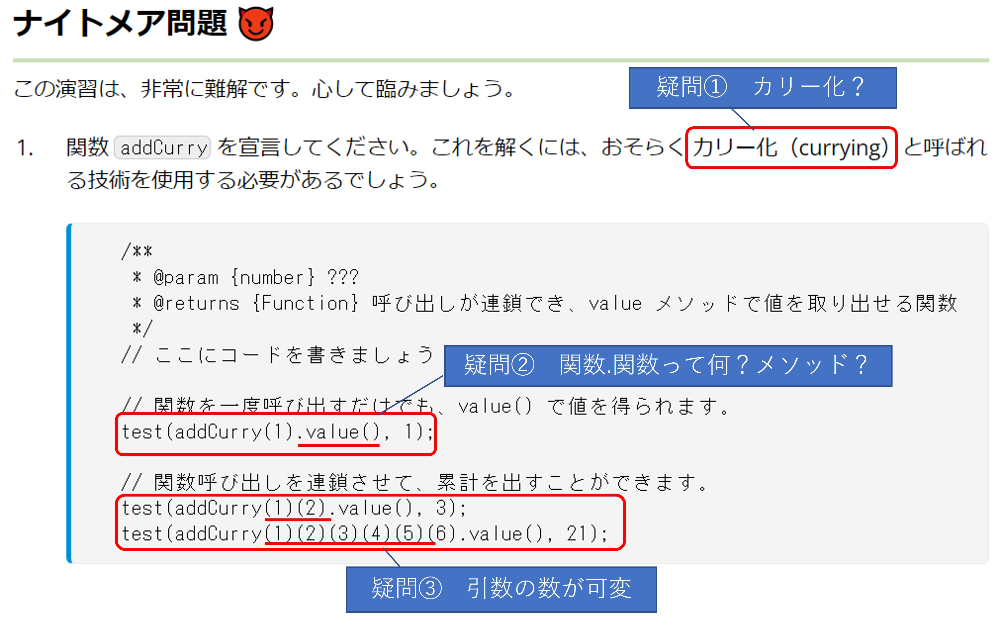
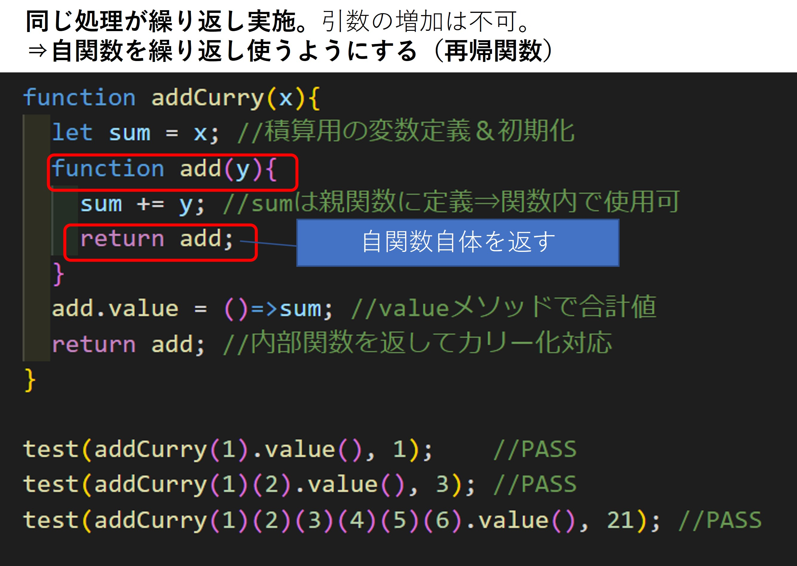

DIG プログラミング基礎 Presentation
報告者：電動パワトレ制御機能開発部 森厚平
Agenda
- 学んだ事
- 苦労した事/深掘りした事
- まとめ
1.学んだ事
講義の中で非常に印象深く、心に残っているポイント
1-1.インポスター症候群
1-2.ソフトウェアエンジニアの心構え
ソフトウェアに限らず、新たな技術を学ぶ時など技術者として重要な考え方
2.苦労した事/深掘りした事
Day13 クロージャー入門のナイトメア問題にかなり苦労したので、その部分を深掘りしました。
ネタバレが若干含まれますので、ご注意下さい
2-1.演習問題

2-2.疑問①カリー化


2-3.疑問②関数オブジェクトのメソッド追加
2-4.疑問③引数の可変化

2-5.リファクタリング

3.まとめ
1か月という長い期間でしたが、あっという間に過ぎて非常に濃密な時間でした。
講師の皆さんは、とても丁寧に講義をしてくれましたし、講義の内容だけでなく、
質問しやすい雰囲気作りや、チームワークの良さも感じ、楽しく学ぶ事ができました。
純粋に言語の勉強だけでなくペアワークでの作業の仕方や、エンジニアの心構え等
多くの事を吸収できたと思います。
ブートキャンプに行きたいと思っているので引き続きよろしくお願い致します